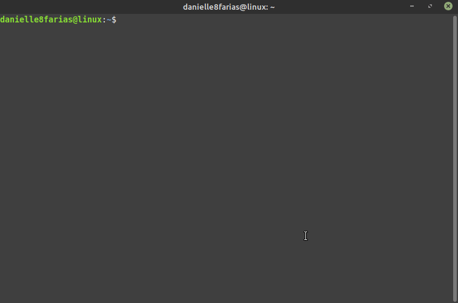
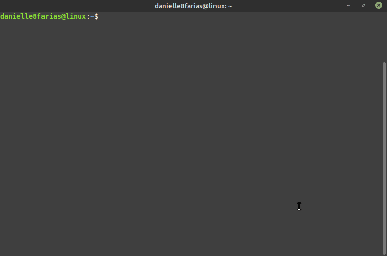
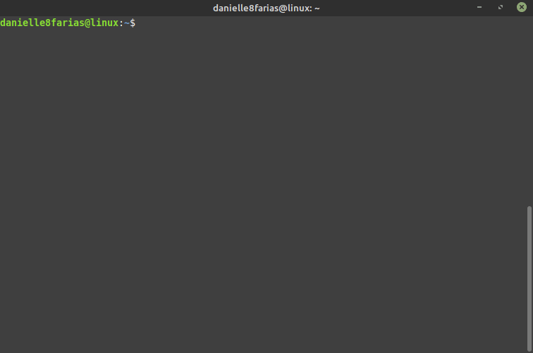
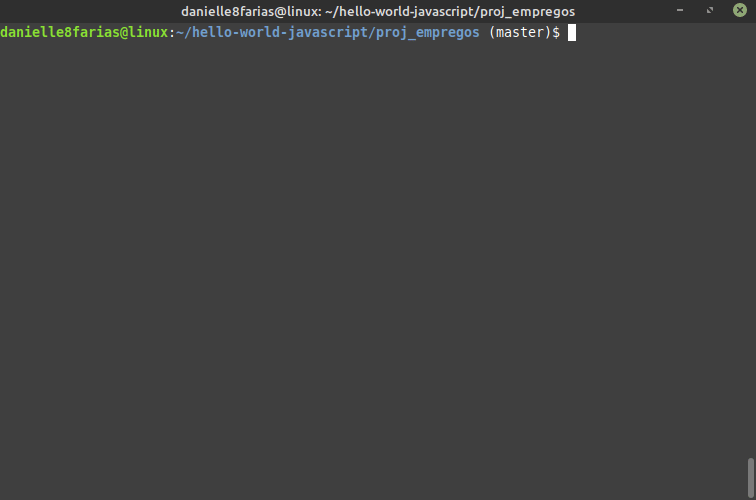
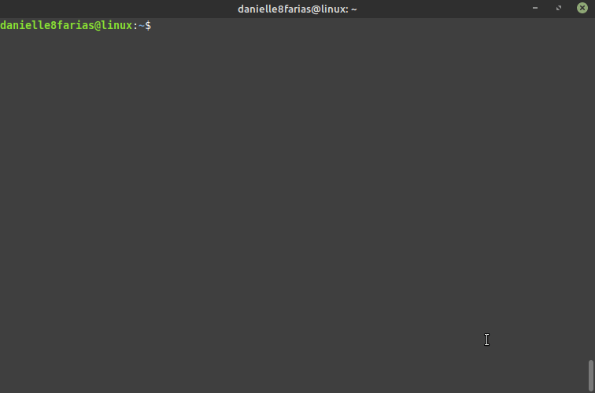
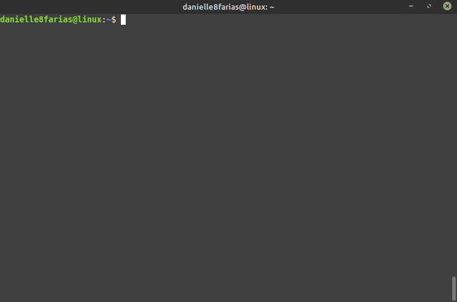

No terminal, digite:
$ ls
- $ indica que você deve usar o usuário comum para fazer essa operação.
- ls é o comando de listar os conteúdos de um diretório.
Isso fará com que o terminal exiba o nome dos arquivos e diretórios no local em que o terminal está.
Listar arquivos e suas especificações
Ao digitar:
$ ls -l
- l traz mais informações sobre os arquivos listados.
O terminal mostrará arquivos e diretórios com as permissões, números de arquivos, proprietário dos arquivos, tamanho, data e hora modificada e nome dos arquivos.
Ao digitar:
$ ls -lh
- lh é a junção dos argumentos l e h.
- h do inglês, human readable, nos mostra os tamanhos em um formato mais legível para humanos, como KB, MB ou GB.
O terminal exibirá os tamanhos dos arquivos de forma mais legível a humanos.
Listar também arquivos ocultos
Digitando:
$ ls -a
- a, do inglês, all, inclui também os arquivos e diretórios ocultos.
Digitando:
$ ls -R
- R, de recursivo.
O terminal lista os arquivos, diretórios e subdiretórios, bem como os arquivos contidos nesses.
Listar arquivos de qualquer lugar
Para listar arquivos de um diretório o qual você não está, basta fornecer o caminho completo até o diretório desejado.
Por exemplo:
$ ls /home/usuario/Música
Atalho para a home do usuário
Caso deseje listar os arquivos que estão dentro da home do usuário, pode se usar o sinal diacrítico til ~.
Exemplo:
$ ls ~/Música

Listar conteúdos em mais de um diretório ao mesmo tempo
É possível listar o conteúdo em mais de um diretório ao mesmo tempo, basta indicá-los depois do ls com espaço entre eles.
Exemplo: listando três diretórios ao mesmo tempo.
$ ls ~ /opt /tmp
